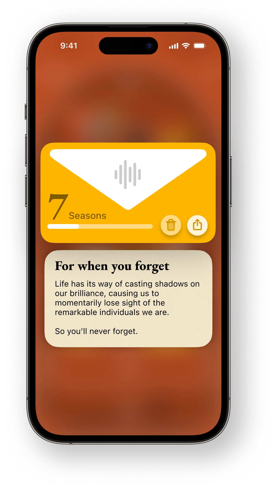

Home
Home
 Work
Work
 About
About
 Audio
Audio
Shelf
A new frontier of
self expression.
self expression.

Furniture for your Mind.
Shelf seamlessly integrates your content with the software that organizes it. Navigate effortlessly by swiping through spaces or tapping through tunnels. Experience your ideas, mood boards, and late-night musings in vivid color and exciting new forms. And in a spatial computer, just reach for the note you're looking for.
Concept
Research
Introduction
Jotting down notes and keeping photos on iPhone isn't hard or time consuming. But it does feel aesthetically unthoughtful.
Our home walls hold our memories and say so much about us - yet our virtual spaces remain sterile and cold.
Our home walls hold our memories and say so much about us - yet our virtual spaces remain sterile and cold.
In a Nutshell
Shelf brings personality and color to organizing your digital life.
It makes organizing your thoughts an exciting new experience - inspired by the walls of your home.
It makes organizing your thoughts an exciting new experience - inspired by the walls of your home.
A Minecraft Chest
This case is a heuristic exploration of organized clutter.
I wanted it to feel as rigourous, fun, and timeless as chests in Minecraft.
And for those who haven't played, I wanted a place designed to take inventory of your digital artifacts, notes, photos, or voice memos, and encourage organization styles beyond the simple list view.
I wanted it to feel as rigourous, fun, and timeless as chests in Minecraft.
And for those who haven't played, I wanted a place designed to take inventory of your digital artifacts, notes, photos, or voice memos, and encourage organization styles beyond the simple list view.
Iconography
I studied iconic representations of software tools, all the way from MacPaint to macOS Sonoma.
Dozens of iterations distilled artifacts down to their essence - stylized with just two colors.
Shelf's financial model is designed around artifact skins, with unqiue, yearly updates that reimagine how items are represented and function.
Dozens of iterations distilled artifacts down to their essence - stylized with just two colors.
Shelf's financial model is designed around artifact skins, with unqiue, yearly updates that reimagine how items are represented and function.
Introspection
Started as a project into personal journaling, shelf has been designed specifically for introspection.
The time capsule artifact, for example, locks away items with time. This encourages one to leave notes for their future self - a reminder of how far they've come.
Tunnels help create organized labrynths of self-expression, getting darker and more limited as you progress deeper into a space, encouraging more thoughtful use of space.
The time capsule artifact, for example, locks away items with time. This encourages one to leave notes for their future self - a reminder of how far they've come.
Tunnels help create organized labrynths of self-expression, getting darker and more limited as you progress deeper into a space, encouraging more thoughtful use of space.
Shelf
Spaces
A new kind of note taker.

Items
Filled with your mind.

Design
Inspired by the beauty and simplicity of shelves in our homes, Shelf feels familiar yet utterly unique. Its smooth, rounded edges and brilliant color invite you rethink, reshape, and reorganize.
This is notes elevated to an art form - a powerful intersection of form and function. An app that is part of creative conversation. Welcome home.
This is notes elevated to an art form - a powerful intersection of form and function. An app that is part of creative conversation. Welcome home.
A Sterile Landscape
The most fertile creative spaces feel alive - walls painted in vibrant hues, shelves packed with inspirations, energy in the air. Yet so many of our digital spaces feel cold and sterile by comparison.
I envisioned something different. A space with personality. Color with purpose. Objects placed with intention, designed for introspection.
I envisioned something different. A space with personality. Color with purpose. Objects placed with intention, designed for introspection.
Magic Cabinet
Add anything.

Tunnels
With room to grow.

Magic Cabinet
Magic Cabinet makes trying out new colors a breeze. And because it's built into every shelf, it can add items as fast as you think of them.
As your shelves overflow, excess items waterfall gently into the cabinet for safekeeping. Or use it to move many items between shelf spaces.
As your shelves overflow, excess items waterfall gently into the cabinet for safekeeping. Or use it to move many items between shelf spaces.
Tunnels
Imagine shelves that expand infinitely, tunneling deeper in any direction you desire. Tunnels add more space as your needs and collections grow.
Lighting becomes more intimate, encouraging quiet focus. And personalized titles help encourage even more introspection.
Lighting becomes more intimate, encouraging quiet focus. And personalized titles help encourage even more introspection.
Focus In
A gorgeous viewing experience.

Time Capsules
Lock away things with time.

Artifact Viewing
Recall those moments of discovery - a seashell pulled from the sand, its ridges and whorls illuminated in your hand. I sought to recreate that tactile joy, that focused fascination, in a digital space.
They adapt to your aesthetic, only needing the two primary colors from your shelf space.
They adapt to your aesthetic, only needing the two primary colors from your shelf space.
Time Capsules
Imagine perpetuating a tradition born of patience and anticipation. In times past, people buried collections in the earth - to be unearthed years later, when the waiting ended.
Now you can securely seal artifacts away in durable letters, for days, weeks, months or seasons. Set the duration, let anticipation build, and send a gift for a future you.
Now you can securely seal artifacts away in durable letters, for days, weeks, months or seasons. Set the duration, let anticipation build, and send a gift for a future you.
Make it Yours
Color code your creativity.

Dreaming in VisionOS
Make it Yours

Tunnels

Exploring digital interaction
Could Shelf decorate our homes? With the right scale and customization, it just might.
What if you could write a hand written letter on a desk and walk it over to its right place? Could you just rip up a note to delete it? What if when you put your ear to a voice memo, it starts to play? Welcome to spatial computing.
What if you could write a hand written letter on a desk and walk it over to its right place? Could you just rip up a note to delete it? What if when you put your ear to a voice memo, it starts to play? Welcome to spatial computing.
Organize in new ways
Could you knock over a shelf in purposeful frustration?
Maybe you grasp each fallen artifact, turning it over in your hands, studying its contours. Then place each back on a shelf, finding a better place.
Maybe you grasp each fallen artifact, turning it over in your hands, studying its contours. Then place each back on a shelf, finding a better place.
Magic Cabinet

Across the Ecosystem
MacOS
Up to four shelves at once.

iPadOS
Just like Mac.
WatchOS
Shelf on a wrist.
WatchOS
Match colors to Shelf or your watch band.
WatchOS
Color New Worlds.
Lessons Learned
Dreams & Iterations

Timeless Design
A lot of time was spent with iconic shapes and timeless mediums, deliberately selecting each curve, material, and shadow. I looked at as many shelves as I could, studying how and why people put things where they do.
Shelf's iconic shape was modeled after the Arc de Triomphe. In many ways, I wanted a place that felt enormous yet friendly, an entranceway to discovery and intention.
Shelf's iconic shape was modeled after the Arc de Triomphe. In many ways, I wanted a place that felt enormous yet friendly, an entranceway to discovery and intention.
Dream within a dream
The project was born when a friend asked me to dream up a more aesthetic journaling app. I drew the app icon first and simply let the interface creatively emerge out of it.
It's almost like a second homescreen. A lot of features, like nesting, color changing, and notetaking are already done quite well elsewhere. But Shelf feels more friendly and approachable than anything I've ever seen.
It's almost like a second homescreen. A lot of features, like nesting, color changing, and notetaking are already done quite well elsewhere. But Shelf feels more friendly and approachable than anything I've ever seen.